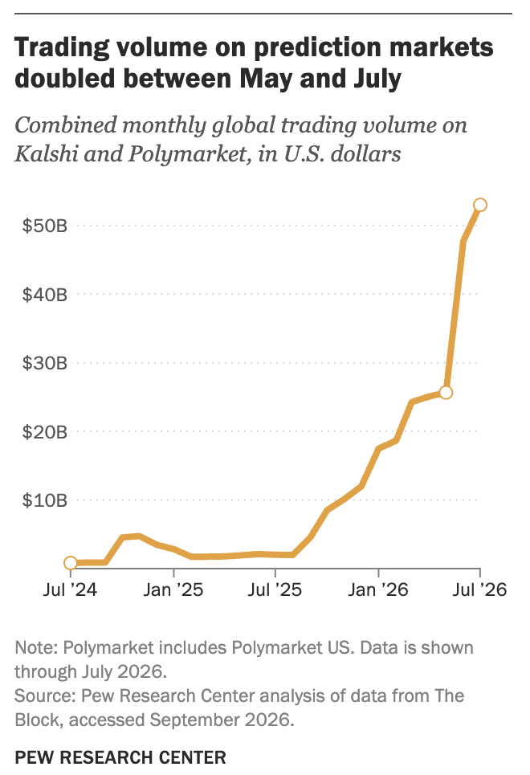

A chart from Richard Davies's chart library, embedded in my own site with vegaEmbed.
As someone who is in the process of looking for a job, I decided to play around with USA unemployment data.
Played around with Germany employment data, looking at a brief comparison between the two countries. It is important to note that the data collection varies between the two, ie Germany unemployment rate is unclear whether it encompasses all ages or only 16+.
Should US regulators ban prediction-market bets on military and government actions? Evidence suggests longshot bets on military markets win more often than prices imply.
In military markets, large longshot bets won 52% against an implied maximum of 35%, and near-perfect accounts were likelier where insiders could know.
A longshot here is a large bet of $2,500 or more at a price of 35 cents or less, so prices imply it should win no more than about 35% of the time, yet in military markets these bets won 51.8% (ACDC, 2026, pp. 11, 15). However, this is not proof of insider trading, as the report notes that chance or mispricing could also explain it, and that an account with one lucky longshot also has a perfect record (ACDC, 2026, pp. 11, 16, 20). Even so, if some traders are acting on non-public information, this raises questions about fairness to ordinary bettors and about whether these markets should face restrictions (ACDC, 2026, pp. 10, 33).
A next step would be to find data linking heavier Polymarket betting to higher political polarization, although I have not found any that tests this yet.
Source: Anti-Corruption Data Collective (ACDC) (2026) Insider Risks in Polymarket Political Markets. Policy brief, April 2026, by Michelle Kendler-Kretsch and David Szakonyi. Covers all settled Polymarket markets, January 2021 to March 2026. Available at: acdatacollective.org (accessed 21 October 2026).
On the left is the original chart from Pew Research Center. On the right is my Vega-Lite replica. Below it is my improved version.

Changing the original graph, I focused on adding some clearer labels to denote the specific spikes that could contribute to increased gambling (such as the US election and the World Cup), the start, and end. Further, I added 0 on the y-axis to better show the scaling of cashflow between markets. I also think the shading gives a better visual to the volume of cashflow, but it may be too much.
Source: Pew Research Center analysis of data from The Block, accessed September 2026. Spike labels are my own annotations, based on reporting by Pew and The Block.
How the API works. The base URL is https://api.worldbank.org/v2, where v2 is the current version of the API. After it come the countries (/country/ followed by codes separated by semicolons, such as mex;bra;ind for Mexico, Brazil and India, etc), the indicator code (/indicator/IC.FRM.BRIB.ZS, the share of firms asked to pay a bribe), and the options after a question mark: format=json for JSON, per_page=1000 for up to 1,000 rows, and mrnev=1 for each country's most recent non-empty value. The full URL below has twelve countries.
What comes back. A JSON list with two parts, [metadata, data]. The data is nearly tidy, with one row per country in its latest survey year, but the country name is nested inside each row. In the chart, "property" tells Vega to read the data part, and country.value reaches the name.
Full URL used in the chart:
https://api.worldbank.org/v2/country/mex;bra;ind;nga;zaf;col;per;idn;ken;arg;tur;phl/indicator/IC.FRM.BRIB.ZS?format=json&per_page=1000&mrnev=1
Open the Google Colab notebook
Scraped bookmaker tables from The Odds API using BeautifulSoup. Challenge: "opens new window" text was stuck to every name, so I stripped it out.
What is a bookmaker? A bookmaker is a company that sets odds on an outcome and takes bets on it. Sportsbooks take the other side of each bet, while exchanges match bettors against each other and charge a fee. The Odds API calls all of these bookmakers, so I use the same word here, and each row counts one company listed in one region.
Why this matters for my research. My research asks whether regulators should restrict prediction markets. In this data, exchanges like Kalshi and Polymarket sit in the same list as ordinary sportsbooks, which shows how blurred the line between betting and prediction markets has become. However, exchanges are a small share of the listings, and this is one company's coverage, so it cannot show the size of the whole market.
My devolution dashboard has six charts on its own page, showing how many gambling and betting sites operated in six UK regions between 2010 and 2026.
Open the UK devolution dashboard
In order to stay on theme with my intended policy direction, I wanted to continue looking at gambling markets in the UK. I compared Scotland, Wales and Northern Ireland, which have their own governments, with London and two English regions, to see whether the number of gambling sites moved the same way. In all six regions there were fewer sites in 2026 than in 2010. However, these figures count sites, not betting activity, and prediction markets are online, so the dashboard cannot speak to them directly. I also have not tested whether any change is linked to devolution itself.